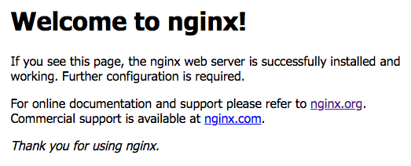
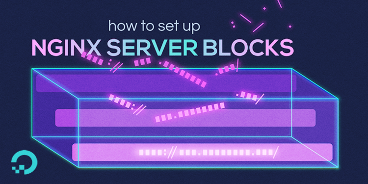

The Cache-Control header is sent to the client’s browser to tell it that these
media files (jpg, png, etc) can be cached, i.e. there’s no need to
redownload them the next time.
Reverse Proxying
Learn what a reverse proxy is, and put it in practice using nginx.
You will need
- A Unix CLI
- A server with an Ubuntu operating system and a public IP address
Recommended reading
On this page
Table of contents
Installing nginx
It’s as simple as installing it with APT:
$> sudo apt install nginx
Making sure it’s working
APT should automatically launch nginx, which will start listening on port 80 right away.
$> ss -tlpn
State Recv-Q Send-Q Local Address:Port
LISTEN 0 128 0.0.0.0:`80` ... users:(("`nginx`",...)
LISTEN 0 128 [::]:`80` ... users:(("`nginx`",...)
...
You can check that the service is running with the following command:
$> sudo systemctl status nginx
You should be able to access your server’s public IP address in a browser and see nginx’s welcome message:

Nginx configuration
Nginx stores its configuration in the /etc/nginx directory.
$> ls -1 /etc/nginx
conf.d
fastcgi.conf
fastcgi_params
koi-utf
koi-win
mime.types
modules-available
modules-enabled
nginx.conf
proxy_params
scgi_params
sites-available
sites-enabled
snippets
uwsgi_params
win-utf
The most important files are:
nginx.confis the main configuration file. Everything starts from there.conf.dis a directory to store reusable configuration fragments.sites-availableis a directory where website configuration files are stored.sites-enabledis a directory containing symbolic links to the configurations insites-available.
The main configuration file
The main /etc/nginx/nginx.conf file is a tree-like structure formed of
contexts delimited by braces ({ and }). Each context contains
configuration related to a specific area of concern.
The basic structure is as follows:
# Main context: global nginx options
events {
# Events context: connection handling options
}
http {
# HTTP context: web server & reverse proxy configuration
server {
# Server context: website configuration
}
server {
# Another server...
}
}
These contexts can contain a number of directives.
Includes
Nginx has an include directive which allows you to split the
configuration into several files instead of having one big file. As you can see,
nginx already includes several other files out of the box:
$> grep include /etc/nginx/nginx.conf
include /etc/nginx/modules-enabled/*.conf;
include /etc/nginx/mime.types;
include /etc/nginx/conf.d/*.conf;
include /etc/nginx/sites-enabled/*;
The most important include is /etc/nginx/sites-enabled/*. Any file in there
will be loaded in the http context, which means they a good place to define
server contexts in.
sites-available vs. sites-enabled
By convention, nginx has two directories for website configuration files:
-
sites-availablecontains the actual configuration files. For example, you could create a file at/etc/nginx/sites-available/example-siteto configure nginx to serve your website.This directory is not included by nginx, so configuration files in it are not automatically picked up.
-
sites-enabledcontains symbolic links to the configuration files insites-available.This directory is included by nginx. Configuration files in it (or links to configuration files) are automatically loaded.
/etc/nginx/sites-enabled/example -> /etc/nginx/sites-available/example
Things are set up like this so that you can work on configuration files in
sites-available but not actually enable them until you put the symbolic link
in sites-enabled. It also allows you to quickly disable a website without
deleting its configuration file.
For example, you could quickly disable a site by deleting its symbolic link:
$> sudo rm /etc/nginx/sites-enabled/example
And re-enable it whenever you want by re-creating the link:
# Create a symbolic link in sites-enabled, pointing to sites-available:
$> sudo ln -s /etc/nginx/sites-available/example /etc/nginx/sites-enabled/
All this without touching the actual configuration file:
/etc/nginx/sites-available/example.
Reloading nginx’s configuration
When you put new symbolic links in sites-enabled, or modify configurations in
sites-available, nginx will not automatically reload them.
You can restart nginx, which will make it reload the configuration, but you can
also tell it to reload its configuration without shutting down. Nginx reacts
to some Unix signals in certain ways. Notably, it reloads its
configuration when receiving a HUP signal.
You can send the signal to the nginx master process yourself with the kill
command, or you can simply reload the associated systemd service, which will
send the signal for you:
$> sudo systemctl reload nginx
Common nginx directives
Nginx has many directives that can be put in various contexts.
These are the most commonly used ones in the server context,
used to serve websites (static or dynamic):
| Directive | Example value | Description |
|---|---|---|
listen |
80, localhost:8000 |
Port (and optional address) on which to listen and accept requests from. |
server_name |
example.com, www.example.com |
Comma-separated list of domain names. Determine which server block handles client requests. |
root |
/home/jde/www/site, /var/www/site |
The root directory for requests. |
index |
index.html |
Define files that will be used as an index, i.e. served by default if there is no URL path. |
location |
/api, ~* \.jpg$ |
Vary configuration based on the URL. |
nginx configuration examples

How to use these examples
Each of the following examples can be put in a separate file in the /etc/nginx/sites-available directory:
-
Copy a website configuration example.
-
Save it in
/etc/nginx/sites-available/example. (Replaceexamplewith whatever name you want to name your site.) -
Create a symbolic link to it in
/etc/nginx/sites-enabledwith this command (this is one command on 3 lines):$> sudo ln -s \/etc/nginx/sites-available/example \/etc/nginx/sites-enabled/example -
Check that you have not made a mistake:
$> sudo nginx -t -
Instruct nginx to reload its configuration with this command:
$> sudo systemctl nginx reload
Static website configuration
This configuration tells nginx to serve the static files in the directory
/home/jde/example when a request arrives on port 80 for the domain
example.com. This demonstrates nginx’s capabilities as a basic web server.
server {
listen 80;
server_name example.com;
root /home/jde/example;
index index.html;
# Instruct the browser to cache images, icons,
# video, audio, HTC, etc for 30 days.
location ~* \.(?:jpg|jpeg|gif|png|ico|cur|gz|svg|mp4|ogg|ogv|webm|htc)$ {
access_log off;
add_header Cache-Control "max-age=2592000";
}
}
Reverse proxy configuration
This configuration tells nginx to forward any request on port 80 for the domain
dynamic.example.com to the application or server at address
http://127.0.0.1:3000, making it behave as a reverse proxy.
server {
listen 80;
server_name dynamic.example.com;
root /path/to/static/files;
# Proxy requests for dynamic content to another server/application.
location / {
proxy_pass http://127.0.0.1:3000;
}
}
In this example, the proxy_pass address is a local address, but it could well
be the IP address of another server in an internal network.
Load balancing configuration
This configuration tells nginx to perform load balancing on incoming
requests on port 80 for the domain big.example.com. With the upstream
directive, it defines a cluster of 4 servers among which to
distribute the load.
# Cluster of applications or servers to handle requests.
upstream big_server_com {
server 127.0.0.3:8000 weight=5; # local application
server 127.0.0.3:8001 weight=5; # local application
server 10.192.67.3:8000; # separate server
server 10.192.56.12:8001; # separate server
}
server {
listen 80;
server_name big.example.com;
# Proxy requests to the cluster.
location / {
proxy_pass http://big_server_com;
}
}
By default, nginx uses a weighted round robin algorithm
to decide to which server each request is proxied. A weight parameter can be
specified to direct more requests to specific servers.